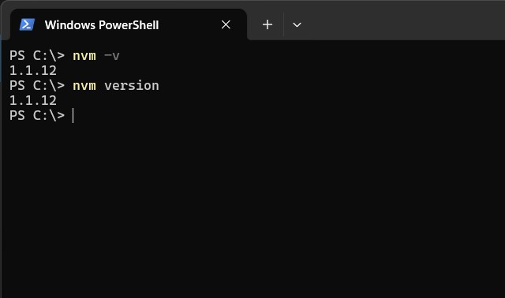
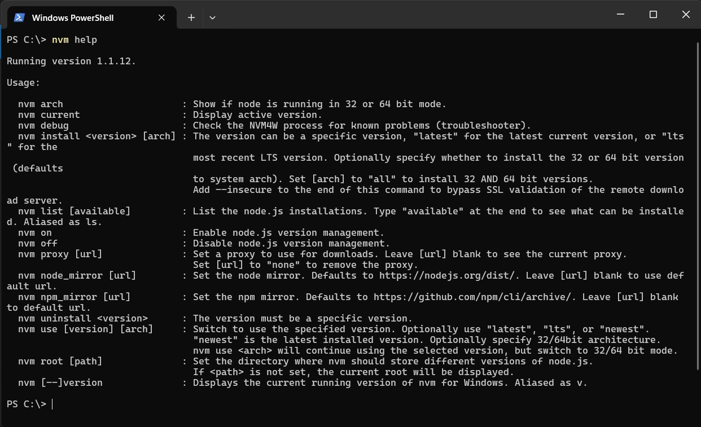
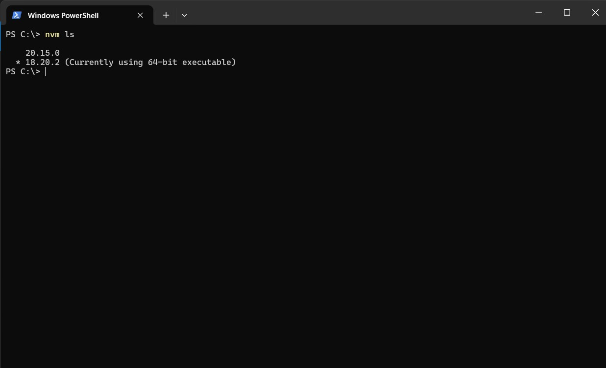

NVM 安裝指南
操作系統
- Windows 11
安裝步驟
1. 下載 NVM for Windows
首先，前往 NVM for Windows 的 GitHub 頁面，下載最新的安裝程式。
2. 安裝 NVM
雙擊下載的安裝程序，按照提示完成安裝。安裝過程中可以選擇安裝目錄，默認情況下會安裝在 C:\Program Files\nodejs。
3. 驗證 NVM 安裝成功
安裝完成後，打開命令提示符或 PowerShell，運行以下命令 :
$ nvm -v
$ nvm version

4. 列出 NVM 命令
你可以運行以下命令來查看所有可用的 NVM 命令 :
$ nvm help

5. 安裝特定的 Node.js 版本
運行以下命令安裝特定的 Node.js 版本 :
# 查看可用的 Node.js 版本
$ nvm ls-remote
# 安裝最新版本
$ nvm install node
6. 列出所有已安裝的 Node.js 版本
運行以下命令查看已安裝的 Node.js 版本 :
$ nvm ls

7. 切換使用的 Node.js 版本
運行以下命令來使用特定的 Node.js 版本 :
$ nvm use <版本號>
$ nvm use 18.20.2
8. 解除安裝特定的 Node.js 版本
運行以下命令來解除安裝特定的 Node.js 版本 :
$ nvm uninstall <版本號>
$ nvm uninstall 20.15.0